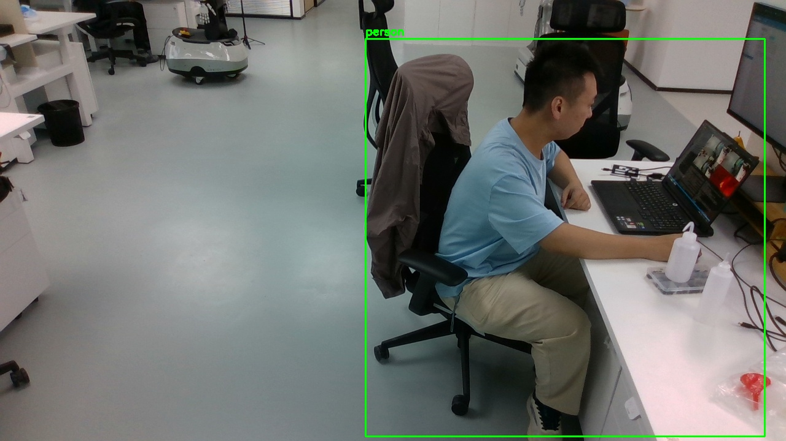
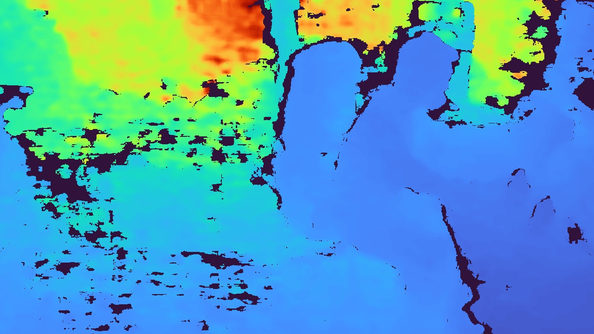
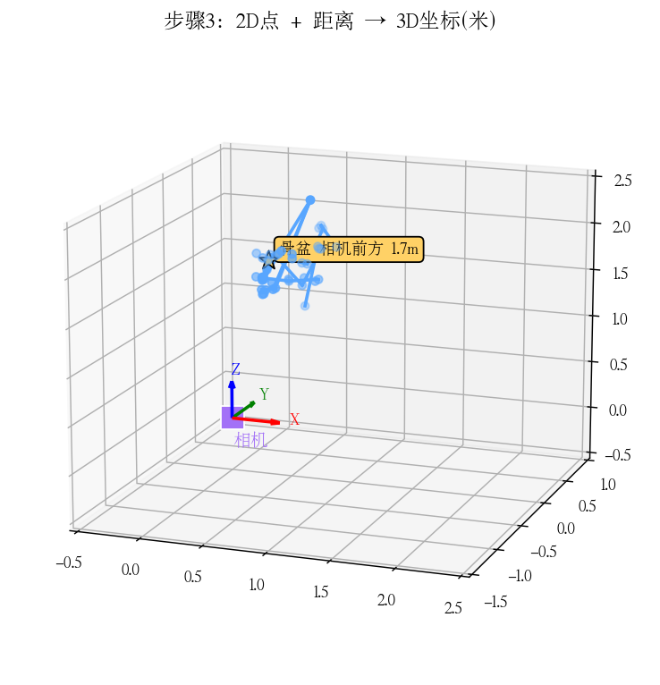
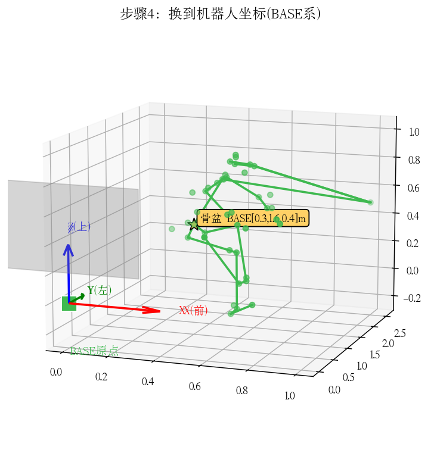
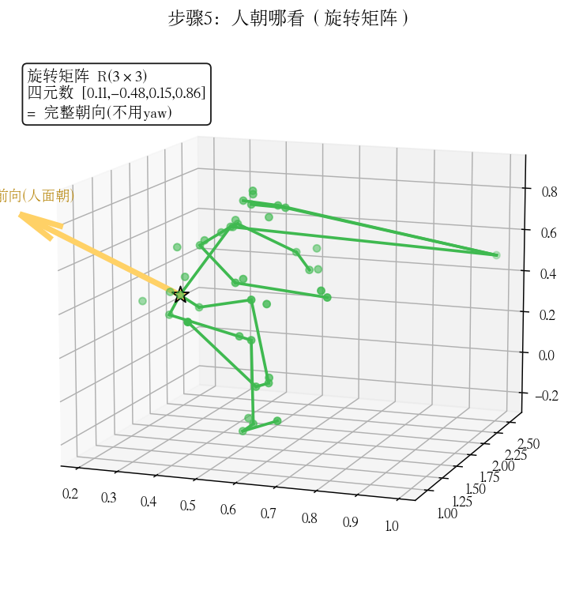

🤖 机器人怎么知道"人在哪 + 面朝哪"
一共 5 步，像一个故事：
相机看到人 → 量出距离 → 算出 3D 位置 → 换到机器人坐标 → 看人朝哪
第 1 步
📷 相机看到人
机器人头上的摄像头拍下一张图，认出人（绿框），并在人身上标出 44 个关节点（鼻子、肩、肘、膝…）。

🧠 类比：就像你用照片找朋友——先圈出人，再指出"这是左肩、这是右膝"。这一步给的是 2D 像素位置（在画面哪个位置）。
关键点：44 个关节点，每个是图像里的一个像素坐标 (u, v)。
还缺什么：光有 2D 位置，不知道人多远、多高。
↓
第 2 步
📏 量出距离（深度）
摄像头里的 深度传感器（红外测距）给出每个像素到相机的真实距离。蓝色越深越近。

🧠 类比：就像用卷尺量每个人身上的点到相机的距离。这一步给的是 米（真实距离，不是猜的）。
关键点：在"第 1 步的关节点像素"处，读深度图的数值 → 得到那个关节离相机多远（米）。
注意：这一步是关键——有了真实距离，才不靠"猜"。
↓
第 3 步
📍 算出 3D 位置
每个关节点 = 2D 像素 + 真实距离 → 算出它在相机 3D 空间的坐标（X 右、Y 下、Z 前，单位米）。骨盆在相机前方约 1.7 米。

🧠 类比：知道"照片里人在中间偏右" + "离相机 1.7 米" → 就知道人站在相机前方哪个真实位置。
关键点：此时得到的是相机坐标（相对摄像头）。相机在机器人头上，所以还不是机器人坐标。
↓
第 4 步
🤖 换到机器人坐标（BASE）
用机器人的 TF 坐标变换，把"相对相机的坐标"换成"相对机器人基座（BASE）的坐标"。这样导航就知道人在机器人前方/左侧/上方多远。

🧠 类比：相机在机器人头上，测得"人在这"——但要告诉底盘"人往左走 1.5 米"，
得先把头部坐标系换算成底座坐标系（就像从"照相机看"换算成"从地上看"）。
关键点：骨盆在 BASE 系 ≈ 前方 0.32m、左侧 1.58m、高 0.38m。
这条链：相机 → 头 → 颈 → 腰 → 膝 → 踝 → BASE（机器人的运动学链）。
↓
第 5 步
🧭 看人朝哪（旋转矩阵）
除了位置，还要知道人面朝哪。用 旋转矩阵（3×3）或 四元数表示——金色箭头就是人的前向。

🧠 类比：位置告诉你"人在哪"，旋转矩阵告诉你"人在面朝你还是背对你，或侧着"。
导航靠它判断该不该避让、往哪边让。
关键点：用完整的旋转矩阵 / 四元数（含俯仰、侧倾、转向），不要只用 yaw（yaw 会丢信息）。
实测：四元数 [0.11, -0.48, 0.15, 0.86]，深度有效 42/44 关节。